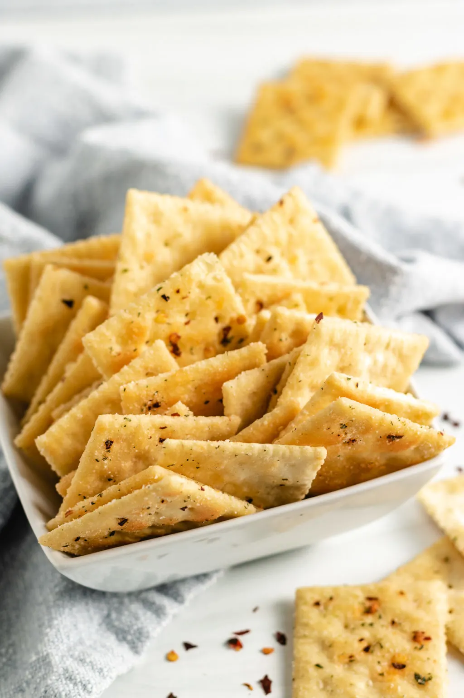

Firecrackers

What is It???
These are spicy saltine crackers. A coworker of mine used to bring these to work events all the time, so I had to go find a recipe for them.
Ingredients
- 1 pound saltine crackers, 4 sleeves (Or oyster crackers, but you'll need to decrease the oil)
- 1 cup canola oil
- 1 ounce ranch seasoning mix, 1 packet
- 1 tablespoon red pepper flakes, adjust to taste
- 1/2 teaspoon garlic powder
Instructions
- Place the crackers into a gallon-size resealable bag or container. Set aside.
- In a small bowl, whisk together the oil, ranch seasoning, red pepper flakes, and garlic powder.
- Pour the mixture into the container with the crackers.
- Carefully rotate the container or bag to coat the crackers. Repeat every 10 to 15 minutes for an hour, until the crackers are well coated and no residual oil mixture remains.
- Allow the crackers to sit 8 hours or up to overnight.
- For additional crunch, you can toast these crackers in the oven at 200°F for about 20 minutes.